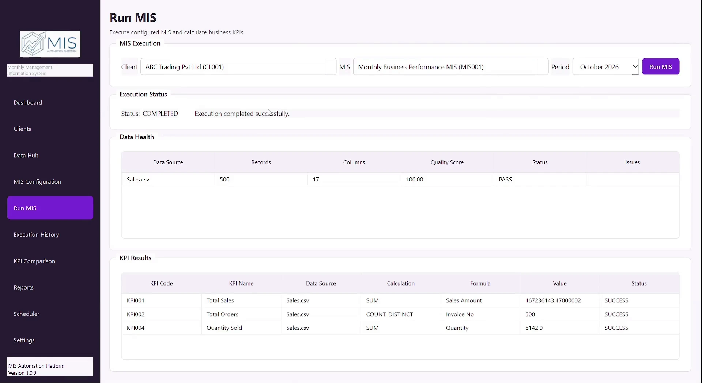

Monthly MIS Automation Platform
Project Overview
The Monthly MIS Automation Platform is a Python-based desktop application designed to organize and automate recurring Management Information System (MIS) reporting workflows.
It brings client management, data-source mapping, data quality checks, configurable KPI calculations, execution tracking, scheduling, and report management into a single application.
The platform is designed for workflows where financial and operational data arrives in multiple CSV or Excel files and must be processed consistently to prepare management information.
1. Problem Statement
Many small and medium-sized businesses and accounting practices rely on spreadsheets to prepare monthly management reports. As reporting requirements grow, managing these processes manually can become time-consuming and difficult to maintain consistently.
Common challenges include:
- Fragmented data sources: Relevant information is stored across multiple CSV and Excel files.
- Repetitive reporting tasks: Data preparation, KPI calculations, and report compilation must be repeated for each reporting cycle.
- Data quality issues: Missing values, duplicate records, and unexpected column structures can affect the reliability of calculations.
- Inconsistent KPI calculations: Different reporting files or manual processes may use inconsistent calculation methods.
- Limited execution tracking: Without a central record of previous runs, reviewing failures and checking earlier processing results can be difficult.
- Growing reporting requirements: Managing multiple clients, data sources, and MIS configurations becomes more complex as the workload increases.
The application addresses these challenges by organizing the reporting process into a configurable, repeatable workflow.
2. Project Objectives
The main objective was to develop a desktop application that manages the MIS workflow from data loading and validation through KPI calculation, execution tracking, and report management.
The key objectives were to:
- Manage clients and their associated data sources.
- Configure MIS definitions, source mappings, and required KPIs.
- Load structured data from CSV and Excel files.
- Check data schemas and quality before KPI processing.
- Calculate configured business metrics through a reusable KPI engine.
- Record execution details and processing status in a local database.
- Configure recurring MIS jobs through a scheduler.
- Provide a central dashboard and reports area for reviewing application activity.
3. Solution & Application Architecture
The application follows a modular Repository-Service architecture, separating the user interface, business logic, database access, and supporting workflows.
Core Components
Client & Data Hub Management
Maintains client records and data-source information. It provides the foundation for associating incoming files with the appropriate MIS configuration.
MIS Configuration
Allows users to configure an MIS definition, map relevant data sources, and associate the KPIs required for a reporting workflow.
Data Loading & Health Checks
Loads supported CSV and Excel files and checks their structure and quality before calculation. Checks include schema compliance, missing values, duplicate records, and configured validation requirements.
KPI Calculation Engine
Processes configured KPIs using reusable calculation logic. Depending on the configured KPI and available data, calculations can include totals, counts, averages, minimum and maximum values, distinct counts, percentages, ratios, and supported formulas.
MIS Execution & History
Coordinates the configured processing workflow and records execution information, including status and associated MIS details, in SQLite. This provides a record that can be reviewed after a run.
Scheduler & Reports Center
Provides interfaces for configuring recurring MIS jobs and managing generated report records and related execution information.
Dashboard
Brings together high-level application information, including active MIS configurations, data sources, report information, and recent execution activity.
Application Interface

4. End-to-End Workflow
The application follows a structured sequence from configuration to reporting.
Client Setup → Data Source Mapping → MIS Configuration → Data Loading → Data Health Checks → KPI Calculation → Execution History → Reports & Dashboard
Step 1: Configure the Client and MIS
Create the client record, define the MIS workflow, select the required data sources, and configure the relevant KPIs.
Step 2: Load the Data
Read the selected CSV and Excel files through the data-loading service and prepare the datasets for validation and processing.
Step 3: Check Data Quality
Verify the expected data structure and run the configured health checks. If the data does not satisfy the application's quality requirements, processing can be stopped rather than continuing with unsuitable input.
Step 4: Calculate Business KPIs
Process the validated datasets and calculate the KPIs associated with the MIS configuration.
Step 5: Record the Execution
Store execution details and status in the SQLite-backed history so that previous runs can be reviewed.
Step 6: Review Reports and Activity
Use the dashboard, execution history, and Reports Center to review available application information and generated reporting artifacts.
5. Key Features
| Feature | Description |
|---|---|
| Client Management | Maintains client records for organizing MIS workflows. |
| Data Hub | Registers data sources and associates them with MIS configurations. |
| MIS Configuration | Defines reporting workflows, data mappings, and required KPIs. |
| Data Health Checks | Checks data structure, missing values, duplicates, and configured validation rules. |
| KPI Calculation Engine | Calculates configured business metrics through reusable logic. |
| MIS Execution | Runs the configured data-processing and KPI workflow. |
| Execution History | Stores execution details and statuses for later review. |
| Scheduler | Provides configuration for recurring MIS jobs. |
| Reports Center | Organizes report records and related output information. |
| Dashboard | Summarizes key application information and recent activity. |
| Local Database | Uses SQLite to persist application configuration, metadata, and execution-related records. |
6. Business Applications & Potential Value
The platform is designed to support more consistent and manageable reporting workflows.
Recurring management reporting
A configured workflow can be reused for subsequent reporting cycles, reducing the need to recreate the same process manually each time.
Data quality before calculation
Pre-processing checks help identify unsuitable data before it is used in KPI calculations, making data issues easier to investigate.
Consistent KPI definitions
Reusable calculation logic helps maintain consistent definitions for metrics such as revenue, cost of goods sold, gross profit, gross margin percentage, and outstanding receivables, where the necessary source data is available.
Execution traceability
Stored execution records help users review previous runs and identify their processing status when investigating reporting issues.
Multi-client workflow organization
Client records, source mappings, and MIS configurations provide a structured way to organize reporting requirements across multiple clients.
A foundation for further analytics
Structured KPI results and historical execution information can support future additions such as period comparisons, variance analysis, and data quality trends.
Note: Actual time savings, error reductions, and financial benefits should be measured through testing with representative datasets before being presented as quantified project outcomes.
7. Technology Stack
| Technology | Role in the Application |
|---|---|
| Python | Core business logic and application workflows. |
| PySide6 | Desktop interface, navigation, configuration forms, and data tables. |
| Pandas | Loading, transforming, and processing tabular data. |
| SQLite | Local persistence for client records, MIS configuration, mappings, execution history, and report metadata. |
| Matplotlib | Charts and visual analytics where implemented. |
| ReportLab | PDF report generation where implemented. |
| JSON | External configuration for supported validation and KPI rules. |
8. Future Enhancements
The following are potential extensions beyond the currently implemented workflow:
- Period-over-Period Analysis: Compare KPIs across reporting periods and highlight significant variances.
- Advanced Analytics: Introduce trend analysis, anomaly detection, and forecasting using suitable historical data.
- Automated Report Distribution: Add scheduled email delivery and integrations with supported storage services.
- Access Control: Introduce role-based permissions and stronger controls for managing access to client information.
- Additional Data Integrations: Connect directly to accounting systems, external SQL databases, and other business data sources.
- Expanded KPI Library: Add industry-specific metrics and more flexible KPI configuration options.
- Data Quality Trends: Track recurring data issues and quality scores across successive reporting runs.
Conclusion
The Monthly MIS Automation Platform brings client and data-source management, MIS configuration, data validation, KPI calculations, execution history, scheduling, and report management into a structured desktop application.
The project demonstrates how Python, PySide6, Pandas, and SQLite can be combined to build a modular reporting system that supports recurring business workflows and provides a foundation for more advanced management analytics.